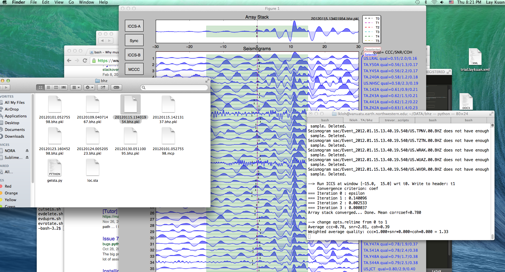
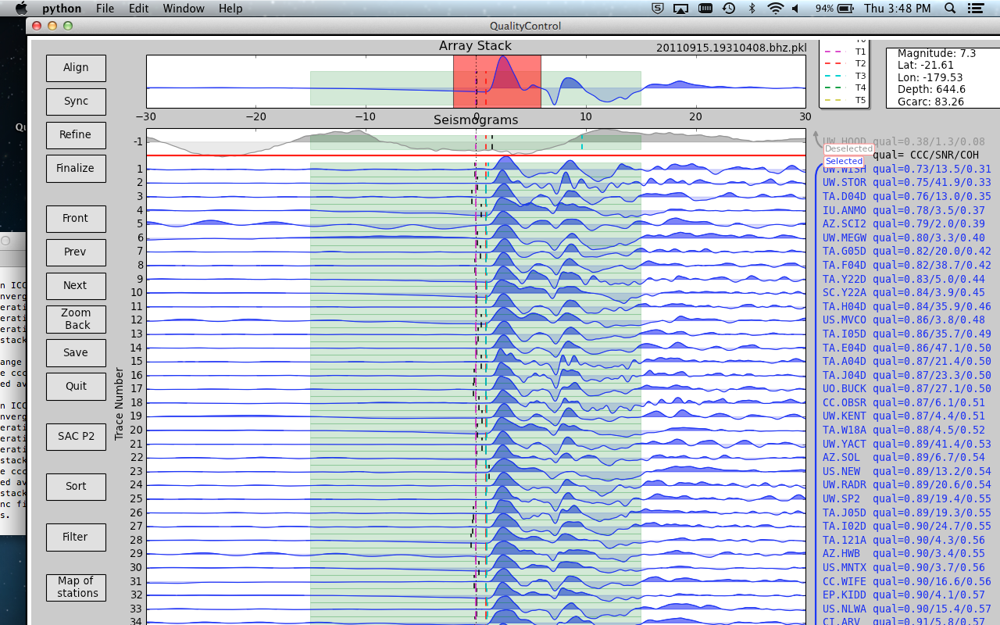
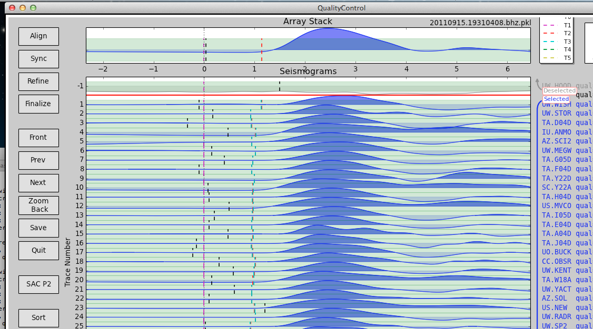
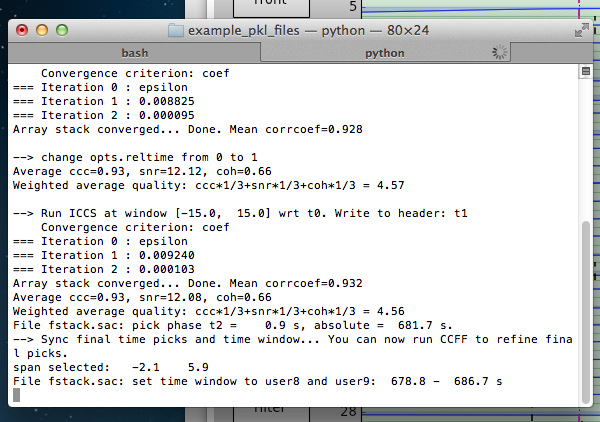
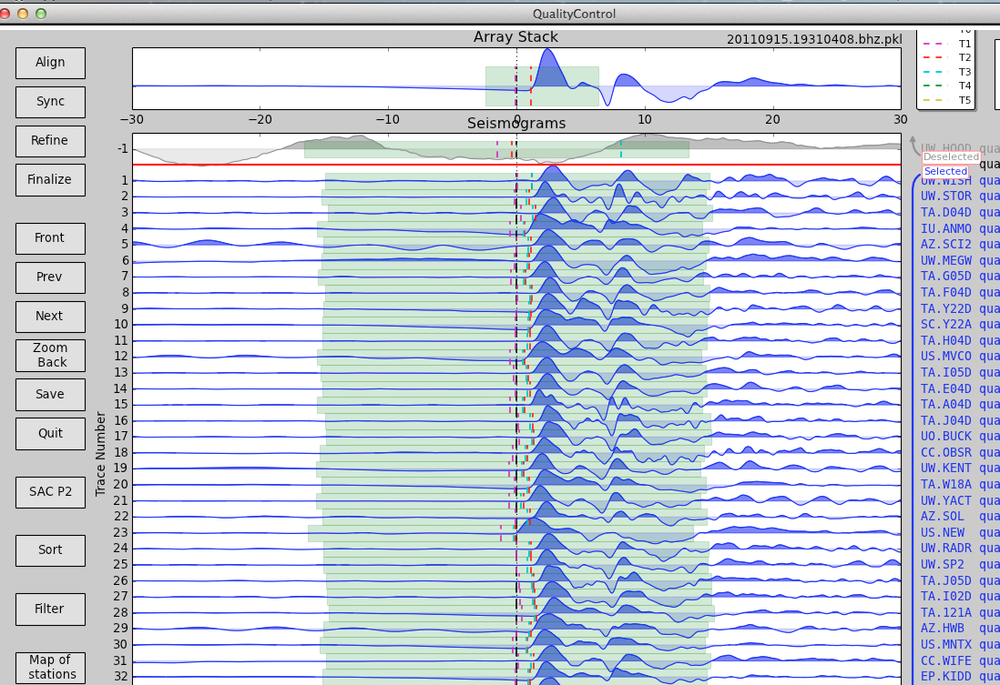
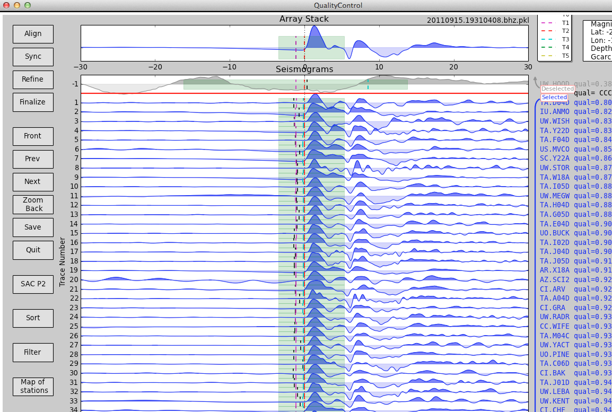
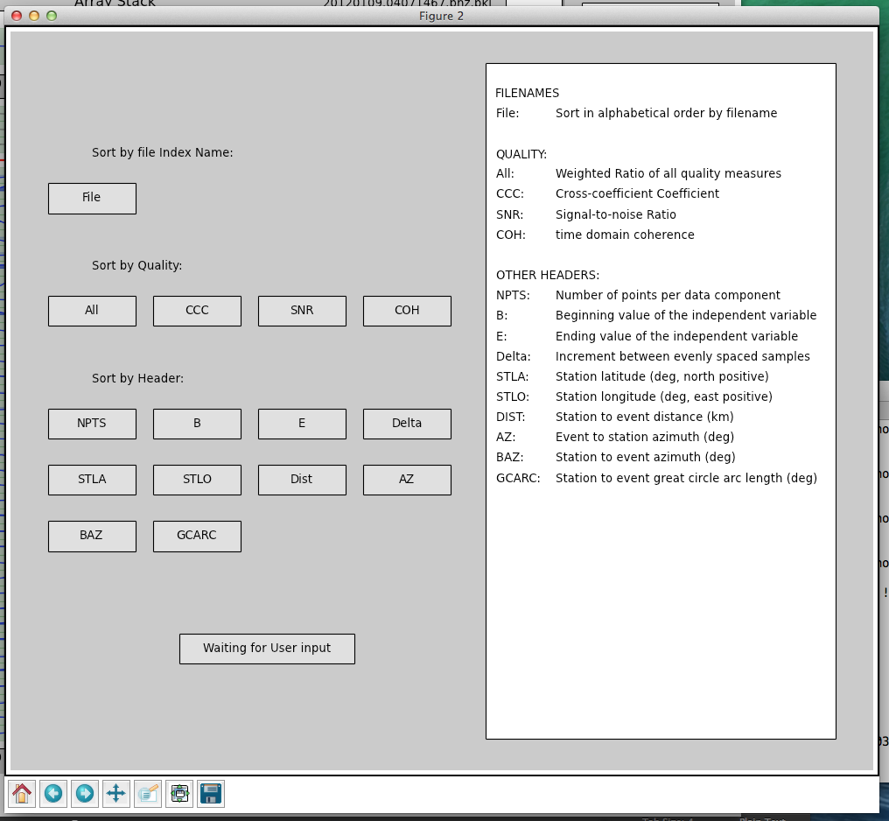
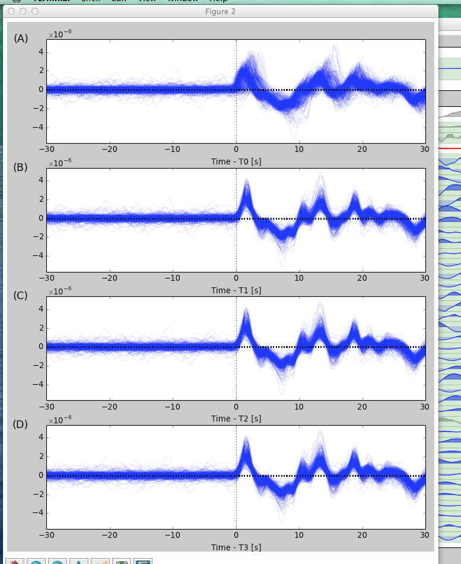
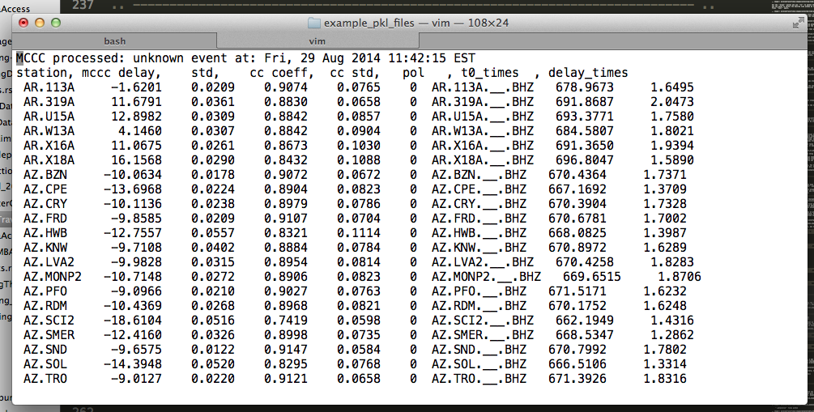
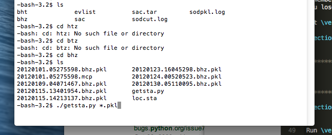

11. Measuring Teleseismic Body Wave Arrival Times¶
The core idea in using AIMBAT to measure teleseismic body wave arrival times has two parts:
- automated phase alignment, to reduce user processing time, and
- interactive quality control, to retain valuable user inputs.
11.1. Automated Phase Alignment¶
The ICCS algorithm calculates an array stack from predicted time picks, cross-correlates each seismogram with the array stack to Find the time lags at maximum cross-correlation, then use the new time picks to update the array stack in an iterative process. The MCCC algorithm cross-correlates each possible pair of seismograms and uses a least-squares method to calculate an optimized set of relative arrival times. Our method is to combine ICCS and MCCC in a four-step procedure using four anchoring time picks \(_0T_i,\,_1T_i,\,_2T_i,\) and \(_3T_i\).
- Coarse alignment by ICCS
- Pick phase arrival at the array stack
- Refined alignment by ICCS
- Final alignment by MCCC
The one-time manual phase picking at the array stack in step (b) allows the measurement of absolute arrival times. The detailed methodology and procedure can be found in [LouVanDerLee2013].
| Step | Algorithm | Input | Output | |||
| Time Window | Time Pick | Time Header | Time Pick | Time Header | ||
| ICCS | \(W_a\) | \(_0T_i\) | T0 | \(_1T_i\) | T1 | |
| ICCS | \(W_b\) | \(_2T'_i\) | T2 | \(_2T_i\) | T2 | |
| MCCS | \(W_b\) | \(_2T_i\) | T2 | \(_3T_i\) | T3 | |
The ICCS and MCCC algorithms are implemented in two modules pysmo.aimbat.algiccs and pysmo.aimbat.algmccc, and can be executed in scripts iccs.py and mccc.py respectively.
11.2. Picking Travel Times¶
This section explains how to run the program ttpick.py to get the travel times you want.
11.2.1. Getting into the right directory¶
In the terminal, cd into the directory with all the pkl files you want to run. You want to run either the .bht or .bhz files. bht files are for S-waves and bhz files are for P-waves. PKL is a bundle of SAC files. Each SAC file is a seismogram, but since you there may be many seismograms from various stations for each event, we bundle them into a PKL file so we only have to import one file into AIMBAT, not a few hundred of them.
11.2.2. Running ttpick.py¶
Run ttpick/py <path-to-pkl-file>. A GUI should pop up if you successfully ran it. Note that if you click on the buttons, they will not work until you move the mouse off them; this is a problem we are hoping to fix.
You can get some example data to test this out by downloading the Github repository data-example. Now, cd into the folder example_pkl_files, which has several pickle files for seismic events. Type:
ttpick.py 20110915.19310408.bhz.pkl
and a python GUI should pop up.
11.2.3. Align¶
Align is only used in the beginning, if you have altered some of the travel time arrivals of the seismograms by pressing t2, and want to realign the array stack.
11.2.4. Selecting a time window around the arrival of interest¶
Hit the Align button and use t2 to select the arrival time. Now press Sync. Use the mouse to select the desired time window on the seismogram on the array stack. Press Sync again.
Next, set the mouse over the seismogram and press the w key. If the new time window has been saved, a message noting the new size of the time window should be printed in the terminal.
The entire width of the $x$-axis is now colored green and will be stored as the time window to use for the cross-correlations. Click the Save Headers Only button.
Quit the GUI and restart it, and you will see that your new, changed time window is preserved in green in the array stack.
Now press refine and all the seismograms will align with the smaller time window.
11.2.5. Get rid of really bad seismograms¶
If there are any really bad seismograms, you can click on them to deselect them. Bad seismograms are those that look nothing like the shape of the array stack pictured. Usually, if there are more than enough seismograms, so it is safe to throw out any that deviate more than a bit from the array stack.
11.2.6. Filtering¶
To filter your data, hit the filter button, and a window will popup for you to use the Butterworth filter to filter your data.
Remember to save your work periodically once you start picking your travel times, otherwise if AIMBAT crashes, you lose it.
You can choose the order by selecting one of the values provided (default is 1), and choose the low and high frequencies for bandpassing by clicking on the appropriate start and stop frequency on the lower graph.
11.2.7. Refine¶
Hit the Refine button to begin the initial cross-correlations. These appear as red lines.
We are not using Align here, but these are the theoretical arrival times, marked in black.
11.2.8. Finalize¶
Hit Finalize to run the Multi-Channel cross-correlation. Do not hit Align or Refine again, or all your work will be erased. A warning will pop up to check if you really do want to hit these two buttons if you do click on them.
11.2.9. Manually pick the arrival times using t2¶
For an earthquake, it is expected that the arrival times should be identical in an idealize situation. However, since stations are located in 3D space, this is not necessarily the case. For earthquakes of magnitude 7.0 and above, usually the arrival times are very well aligned as the signal is high. However, if the earthquake is too strong, the source gets complicated, so it needs filtering.
Below a magnitude of 6.0, the signal to noise ratio gets very weak. If the weighted average quality gets too low (1.0 and below), it may not be worth keeping that data set unless you really need it.
We manually pick the the arrival times to align them. Click on the GUI window, hover over the correct spot where you want to pick the new travel time, and type t2. A red line should appear exactly where your mouse was. You can zoom in to help you with this picking. To zoom out, just hit MCCC again.
Also pick the arrival time on the array stack. For the arrival times, you want to align the point where the first peak occurs most of all, then try to get the peaks to align.
11.2.10. SACP2 to check for outlier seismograms¶
Hit and go to the last figure, (d). Zoom in to have a better look. Zooming in doesn’t always work well; close and reopen the SACP2 window if there are problems.
Click on the outliers that stray from the main group of stacked seismograms. The terminal will output the names of the seismograms that you clicked on, so you can return to the main GUI window and readjust the travel times.
11.2.11. Go through the badly aligned seismograms and realign the travel times manually¶
By default, the worst seismograms are on the first page, and as you click through the pages, the quality of the seismograms gradually gets better. Keep using t2 to realign the arrival times so that the peaks of all the seismograms are nicely aligned. Remember to zoom in to have a better look.
However, you may which to sort the seismograms in alphabetical order so that you can find the bad seismogrrams and correct them more easily. Hit the sort button and a window will popup for you to choose which sorting method to use. In this case, choose to sort the files by filename.
 The seismograms are stretched to fit together, but they may be scaled differently.
11.3. What the Alignments Stand For¶
- T0: Theoretical Arrival
- T1: Pick from initial cross correlation
- T2: Travel Time pick
- T3: MCCC pick
- T4: Zoom in
11.4. Post Processing¶
11.4.1. Getting the output¶
In the same folder as the initial PKL file you ran ttpick.py on, you can find the output list with extension <event name>.mcp, which contains the travel time arrivals.
mccc delay` is t3`+average arrival times, and `t0_times are the theoretical arrival times. delay_times are obtained by taking $t3-t0$.
11.4.2. Disclaimer about delay times¶
t0 depends on hypocenter location, origin time and reference model. We compute the delay time by finding t3-t0, but it does not have elliptic, topological, or crust corrections.
11.4.3. Getting the stations of the seismograms chosen¶
Run getsta.py in the additional scripts (not on Github for now). It gives the unique list of stations where the seismograms came from. You need to run it with the list of all pkl files chosen after you saved to. You so this ./getsta.py *.pkl.
11.4.4. Picking Travel Times does not work¶
If you run ttick.py <Event name>.bhz.pkl, a GUI will pop up for you to manually pick the travel times by pressing the keyboard. If typing on the keyboard as directed does not allow you to pick travel times, it could be a problem with the keyboard settings, or the matplotlib backend.
To fix this, first look for the .matplotlib directory. It is hidden so in your home directory do ls -a to find it. Once you have found the .matplotlib directory, cd into it, and then look for the matplotlibrc file. Inside that file, ensure the backend is set to:
backend : TkAgg
Comment out the other backends!
11.4.5. Travel Times¶
If one of the seismograms being picked does not fit completely within the green (computer) window, nad you hit ICCC-A or ICCC-B, you will get an error message complaining about the exact seismogram which is too short. Deselect it.

Table Of Contents
- 11. Measuring Teleseismic Body Wave Arrival Times
- 11.1. Automated Phase Alignment
- 11.2. Picking Travel Times
- 11.2.1. Getting into the right directory
- 11.2.2. Running ttpick.py
- 11.2.3. Align
- 11.2.4. Selecting a time window around the arrival of interest
- 11.2.5. Get rid of really bad seismograms
- 11.2.6. Filtering
- 11.2.7. Refine
- 11.2.8. Finalize
- 11.2.9. Manually pick the arrival times using t2
- 11.2.10. SACP2 to check for outlier seismograms
- 11.2.11. Go through the badly aligned seismograms and realign the travel times manually
- 11.3. What the Alignments Stand For
- 11.4. Post Processing
Previous topic
Next topic
12. Visualizing Stations on a map